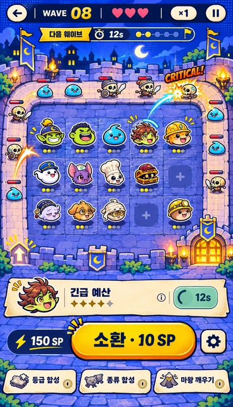
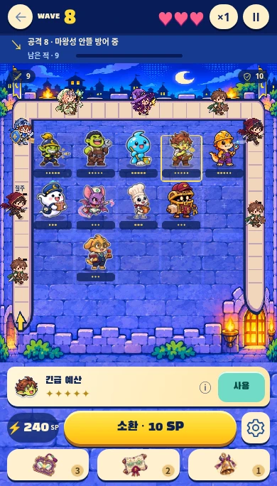
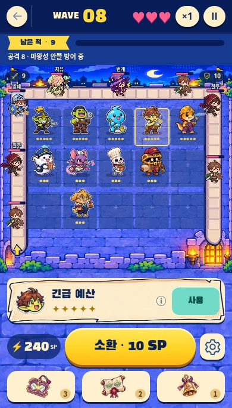

플레이 화면 · 시안과 실제 화면 비교
동일한 390×684 비율에서 비교했습니다. 전신 직원·하단 아이콘·기존 적군은 요청하신 방향을 유지했습니다.

승인 시안
수정 전 실제 화면
수정 후 실제 화면수정한 차이
- 작던 WAVE·숫자·스킬명과 SP/소환 버튼을 키웠습니다.
- 금색 상태 바와 진행 표시, 종이 질감의 스킬 영역, 둥근 포장 길과 큰 바닥 칸을 반영했습니다.
- 검은 등급 받침을 없애고 금색 등급 점을 키웠습니다.
- 적군 체력·보호막·종류 표시가 전신 크기를 따라가도록 수정했습니다.
- 화면 크기 경계에서 보드 비율이 튀던 문제를 수정했습니다.
최적화
전투 아틀라스·대체 전신·아이템 아이콘·공통 글꼴 묶음 약 50.36% 절감. 아틀라스 RGBA 픽셀 메모리 추정치 약 59.54% 절감. 모션 102개와 글꼴 전체 글자를 유지했습니다.
아군은 전신, 하단은 아이콘 전용이며 적군과 표시 수치는 실제 게임을 기준으로 합니다.
게임 열기 → · 17종 전신 애셋 →